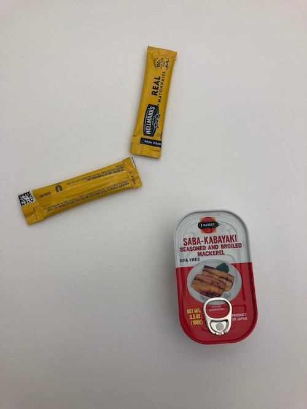
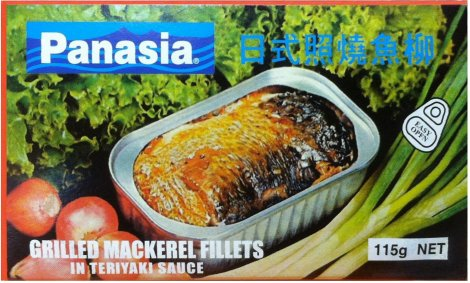

03.19.2020
mackerel updates: a collection from past weeks
We're now fully in quarantine mode here in nyc (not officially but we all gonna stay home now), so taking this time to update the blog with all the mackerel we tried in the past couple of months.
We've instituted a 'fish library' at our house: partly by way of disaster preparedness, partly by way of self-indulgence. Most of it we bought in Boston when we were back there 2 weeks ago -- a
lot of Gonsalves products made it back with us. Here's a pic of me getting reunited with the mackerel:
Before that though, we were ploughing through mackerel brands to identify the best options for busy new yorkers (sadly yet to make a pilgramage to Elizabeth, NJ).
Early on we got in with the Saba-Kabayaki, a japanese brand that we picked up from our new favourite supermarket in Manhattan Chinatown, the catchily-named
Chinatown Supermarket of Manhattan (along with a strong tinned fish section, we also managed to buy some
kaya jam there).

We ate this for a work lunch with boiled potatoes, fried kale, mayonnaise and Aji Amarillo paste (a
lovely thing to have with a potato). It was good: sweet, but not too sweet, nicely smoky, and had a firm texture that held up well. It would have been a bit much all by itself, though: we were certainly glad of the potatoes.

Next up: panasia's teriyaki tin. This one we weren't anticipating being great, but after the success of the kabayaki (a preparation method that uses sweet soy, traditionally used for grilled eel) we thought it might work well. Sadly, it was pretty average, with a less enjoyable texture, and unattractive greyness to the dish that didn't live up to the beautiful image on the tin. Alas: perhaps the least good of the panasias yet (still totally edible though! might make a good filling for something)
Get excited for our next post, where in a departure from our normal programming we'll break into the tinned garlic squid we got in Market Basket, as well as a tin of russian mackerel we've been saving for a rainy day.